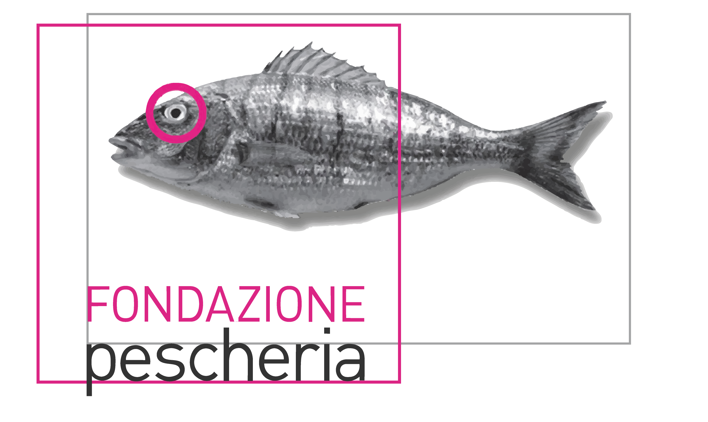

Photo by ALEX D'EMILIA
ISAC - 2024 IN COLLABORATION WITH IRCAM CENTRE POMPIDOU
The great leap forward that free Ambisonics technology has produced in recent years has allowed the development of an increasing number of artistic creations in various areas of music production. Electronic and mixed music, soundscape art, thematic documentary, audio drama, music recording etc., are all finally embracing spatial audio techniques to shape sound on a spherical domain, where space (position, dimension and perspective of sound sources) becomes a usable compositional element.
Even if sound synthesis/manipulation/post-production software and hardware for these creations are now widely available, it is obviously much rarer to find theatres and structures capable of reproducing these works in HOA spherical periphony, especially for an audience of adequate size. The presence in the city of Pesaro (Italy) of two public venues for high quality spherical 3D-audio (SONOSFERA® at the Civic Museums of Pesaro, and SPACE Soundscape Projection Ambisonics Control Engine at the “G. Rossini” Music Conservatory) constitute an exceptional opportunity for contemporary music in exploiting the potential for 3-dimensional sound composition in all possible forms of innovation. SONOSFERA® in particular, is able to fulfill both needs: a technological standard of 6th order Ambisonics of the highest sound quality level, and a capacity of 60 seats.
LOCATIONS
Sonosfera® is a mobile technological amphitheatre for deep listening of ecosystems and music, designed for Pesaro UNESCO City of Music by David Monacchi opened to the public in Dec 2019. It is equipped with an array of 45 custom-built loudspeakers isotropically positioned in a spherical space (with the only exception of the nadir area) with perfect internal acoustics. Sound- transparent circular terraces lift the audience above an acoustically ‘active’ lower hemisphere, while the upper one is also equipped with a 360° projection screen with horizontal resolution of 24k. Sonosfera® puts listeners at the centre of soundscape, in the darkness of a stimulating acousmatic sensorial experience, sometimes lighted up by visual analyses of sound. Sonosfera® was originally designed and built specifically for the spherical reconstruction of HOA field recordings carried out in primary tropical rainforest ecosystems, within the long-term scope of the project Fragments of Extinction. But Sonosfera® is, of course, capable of reproducing any 3D-soundfield with up to 6th- order ambisonics spatial resolution, including new creations of electroacoustic, soundscape, and integrated audio-visual compositions.

Located in the heart of the Place Stravinsky building, the Espace de projection (otherwise known as the Espro) is the place where IRCAM and the public meet, a unique space whose acoustics and scenography can be modified. As its name indicates, "Espro" is not a concert hall like any other. The utopia remains alive and today IRCAM offers artistic experiences that spectators can't find anywhere else. A place of experimentation, a place of expression for science and the arts, an exhibition space for sound, live performance, and multi-media, Espro literally captures the spirit of the times.
TEAM
International Sonosfera® Ambisonics Competition "Eugenio Giordani" March 15th / 22nd 2024 Pesaro ItalyPatronage
+ Comune di PESARO
+ IRCAM Paris
+ Sonosfera®
+ Fondazione Pescheria
+ Conservatorio Rossini
Sonosfera® Curators
+ David Monacchi
+ Daniele Vimini
Steering Committee
+ Nicola Casetta
+ Carmine Emanuele Cella
+ Tommaso Giunti
+ David Monacchi
+ Alessandro Petrolati
Guest Jury
+ IRCAM - Paris
CONTACT
Pesaro
PALAZZO MOSCA - MUSEI CIVICI Piazza Mosca, 29







ISAC 2024 - International Sonosfera® Ambisonics Competition “Eugenio Giordani”